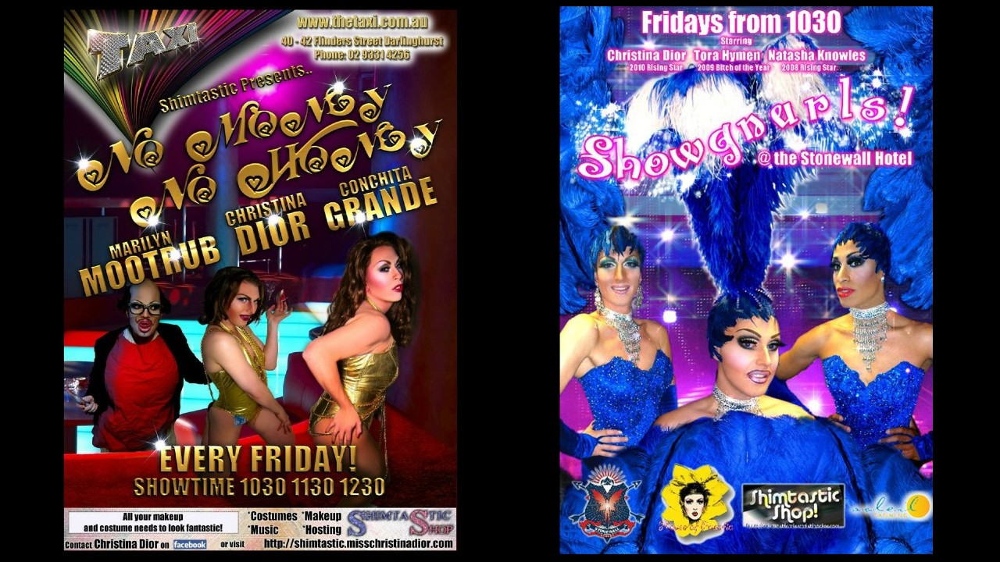
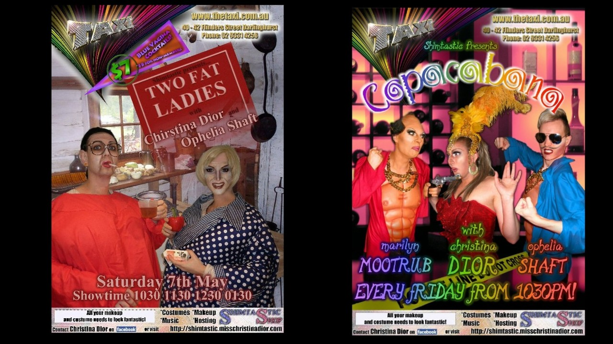
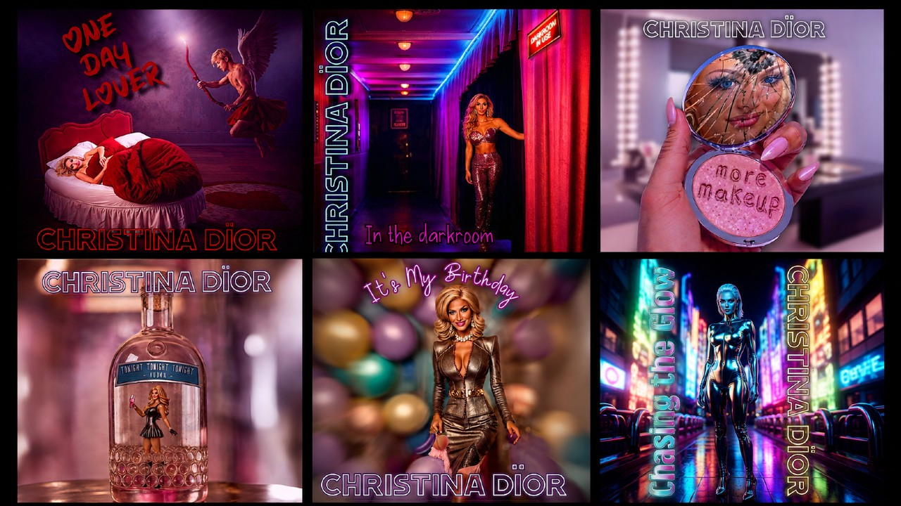
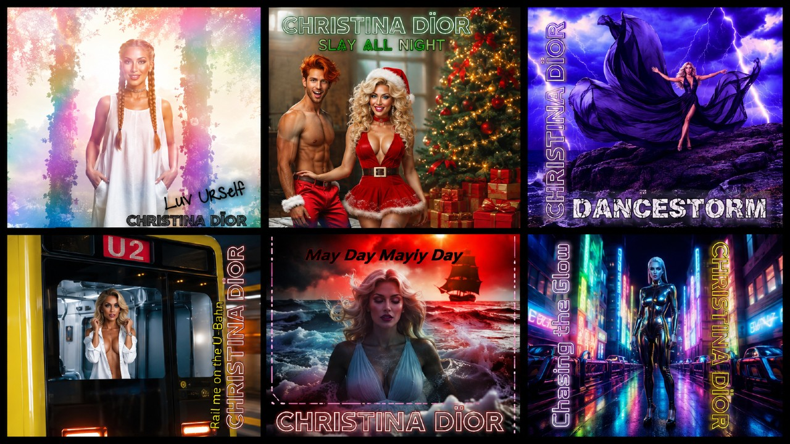

MUSIC VIDEO / SHOW ARTWORK / RELEASE VISUALS
Christina Dior is a drag performer who has appeared in numerous shows across Australia and Europe, alongside releasing original songs on streaming platforms.
I produced a music video for one of her songs as an independent collaborative project and an opportunity to explore new creative platforms and production methods. The work required translating the identity and mood of the song into a complete visual sequence, combining imagery, pacing, editing and music-led storytelling rather than treating each shot as an isolated asset.
I have also created the posters and promotional artwork used for Christina's live shows. The gallery on the right includes examples of this show artwork, while the square images toward the bottom are cover artworks created for her music releases.
Together, the work demonstrates how one performer identity can be developed across motion, event promotion and release artwork while adapting the creative direction to different formats and audiences.
Deliverables
Music video · show posters · promotional artwork · streaming cover artwork · performance visuals
Focus
Music-led editing · visual identity · promotional design · format adaptation · audience-facing creative



